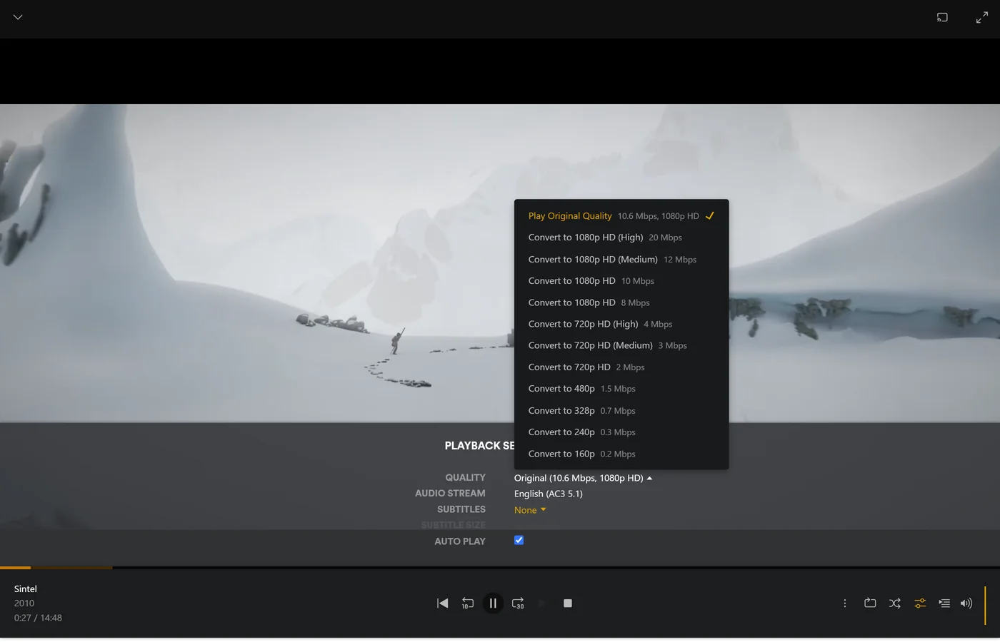

Bagikan rex dengan keluarga dan teman
Bagikan rex dari akun yang terdaftar melalui Manage Library Access di Plex. Setiap orang masuk ke Plex dengan akunnya sendiri dan melihat rex di samping server lain mereka, lengkap dengan riwayat tontonan masing-masing.
Siapkan rex di akun Plex baru dulu. Gunakan rex dengan aplikasi Anda sendiri, rex dengan addon Stremio Anda, atau rex dengan zurg. Di bawah ini, the owner berarti akun tersebut.
Siapa siapa
Akun kamu sendiri tidak mendapat lebih dari siapa pun yang kamu bagikan. Alasannya: Apakah akun Plex saya berisiko?
Undang seseorang
- Masuk ke app.plex.tv sebagai pemilik, lalu buka Settings (ikon kunci inggris), Manage Library Access, dan Grant Library Access.
- Masukkan username atau email Plex orang tersebut, pilih server rex dan library yang mau dibagikan, lalu kirim undangannya.
- Mereka menerima undangan dengan masuk sebagai diri mereka sendiri. Undangan dikirim lewat email dan muncul di app.plex.tv. Setiap undangan harus diterima satu per satu.

Library yang kamu tambahkan nanti (yang dideklarasikan sebuah source, seperti library Anime atau katalog rex-stremio, atau yang dibuat dengan Add Library) belum ada di share siapa pun. Tambahkan ke setiap share di Manage Library Access.
Apa yang harus mereka lihat. Saat masuk sebagai diri mereka sendiri, aplikasi Plex mereka menampilkan rex di samping server milik mereka sendiri. Di rumah, itu sudah cukup. Kalau di luar rumah, baca terus.
Di rumah dan di luar
Di rumah, aplikasi Plex menemukan rex di jaringan Anda sendiri saat rex memakai port 32400.
Di luar rumah, yang selalu terjadi untuk teman yang tinggal di rumah lain, aplikasi mereka butuh alamat HTTPS rex. rex tidak punya relay. Cara paling sederhana adalah rex-direct: teruskan port 32400 di router Anda ke mesin rex. Jika tidak ada IPv4 publik tetapi ada IPv6, gunakan lewat IPv6 saja; jaringan teman Anda kemudian juga harus punya IPv6. Gunakan di luar rumah memuat cara ini dan cara lainnya.
Kecepatan upload Anda adalah batasnya. Setiap stream yang ditonton di luar rumah keluar lewat upload koneksi rumah Anda, dengan bitrate file aslinya kecuali dikonversi. Jadi jika dua orang menonton bersamaan, upload harus cukup untuk keduanya. Tiga hal ini membantu:
-
Kualitas lebih rendah. Orang yang memilih kualitas di bawah Original di pemutar akan mendapat stream yang sudah dikonversi, yang ukurannya lebih kecil. Ini butuh FFmpeg di mesin rex (Mengonversi video). Aplikasi Plex di ponsel dengan data seluler membatasi kualitas hingga 720p dan 4 Mbps, jadi tanpa FFmpeg, judul 1080p di sana akan ditolak sampai mereka mengatur kualitas seluler ke Original.

-
Aplikasi mengunduh dari penyedia Anda. Plezy dan Plex untuk Android bisa mengambil file dari tautan yang diberikan sumber Anda, misalnya dari layanan debrid Anda, sehingga koneksi Anda tidak membawa apa pun dari itu: Aplikasi mengunduh dari penyedia Anda. Penyedia Anda kemudian melihat setiap orang mengunduh dari alamat mereka sendiri, jadi periksa aturan penyedia Anda sebelum berbagi dengan cara itu.
-
Batas per orang (lihat di bawah).
Tidak perlu Plex Pass. Teman Anda tidak perlu Plex Pass atau Remote Watch Pass untuk menonton di luar rumah. Ini sudah diuji di Plex Web dengan akun gratis di kedua sisi; aplikasi lain belum diuji di luar rumah.
Anak-anak: pengguna terkelola
Jika pemilik punya Plex Home dengan pengguna terkelola, pengguna terkelola bisa memakai rex sama seperti di server Plex. Bagikan rex ke mereka lewat Manage Library Access seperti pengguna lain, lalu batasi apa yang bisa mereka lihat (lihat di bawah). Mereka akan punya riwayat tontonan sendiri. rex sudah diuji dengan pengguna terkelola yang hanya dibagikan Movies, hanya judul berperingkat G dan PG, serta tanpa download.
Apa yang boleh dilihat dan dilakukan tiap orang
Kamu yang memilih ini per orang, di bagian share mereka di Manage Library Access, seperti di server Plex mana pun. rex mengikutinya di mana-mana: di daftar library, pencarian, baris di layar utama, dan halaman judul.
Plex hanya menampilkan Ratings dan Labels di share jika akun pemilik punya Plex Pass. Di akun gratis yang baru, share hanya menawarkan Allow Downloads saja. Batasan rex di bawah ini tetap bisa mengatur rating dan label tanpa itu.

rex mendengar perubahan dari plex.tv saat kamu membuatnya. Jika perubahan tidak muncul, restart rex.
rex juga bisa menyimpan batasan sendiri untuk sebuah share, di atas batasan Plex. Batasan ini hanya bisa mempersempit apa yang diizinkan Plex. Batasan ini diatur lewat perintah, bukan di aplikasi Plex: Kontrol pemilik lokal.
Siapa boleh melakukan apa
Collection dan poster milik server, jadi semua orang melihat yang sama.
Bawa riwayat tiap orang
Siapa pun yang kamu bagikan bisa menyalin apa yang mereka tonton dan nilai di server Plex lain, masing-masing dengan token mereka sendiri: Bawa riwayat tontonanmu. Menjalankannya tidak mengubah riwayat orang lain.
Berapa banyak sekaligus
rex tidak punya batas sendiri untuk jumlah orang yang menonton bersamaan. Kecepatan upload Anda, mesin Anda, dan sumber Anda yang menentukannya. Setiap konversi menjalankan FFmpeg di mesin rex. Berapa banyak konversi sekaligus yang masih sanggup ditangani mesin Anda tergantung pada mesinnya, dan dua konversi sekaligus belum pernah diukur. Video yang disalin (hanya suaranya yang dikonversi) hampir tidak membebani apa pun.
Untuk mengatur batas, masuk sebagai pemilik server lalu buka pengaturan server:
rex menolak pemutaran yang melebihi batas.